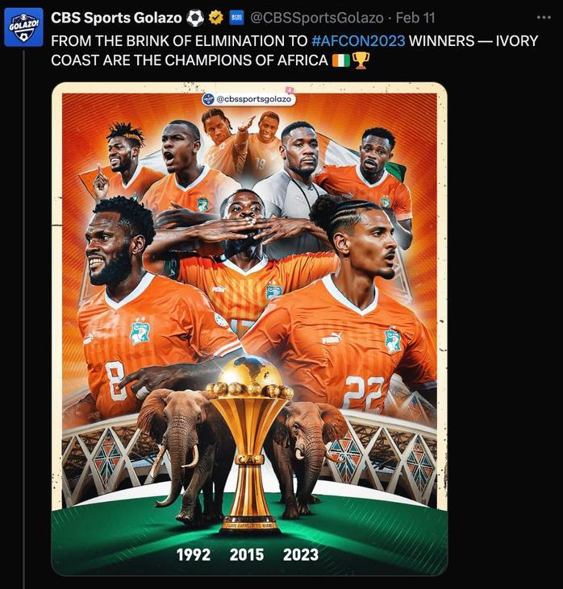
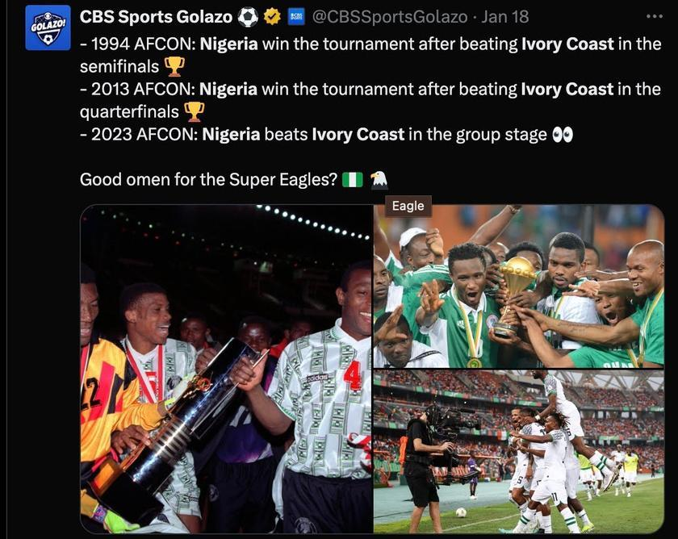
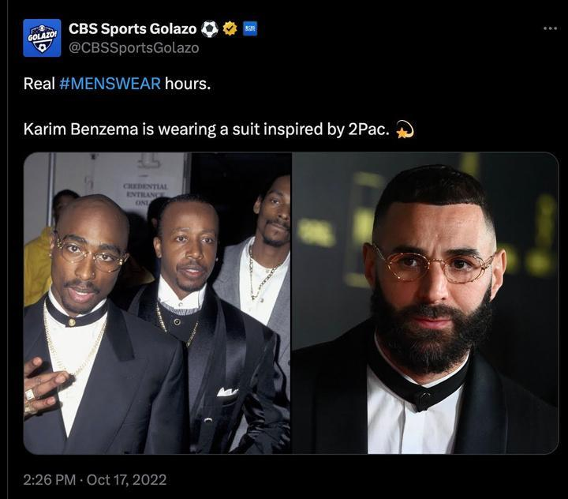
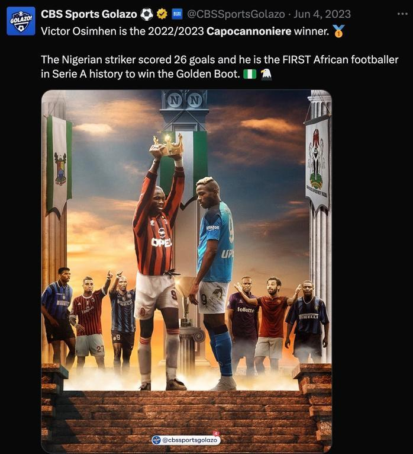
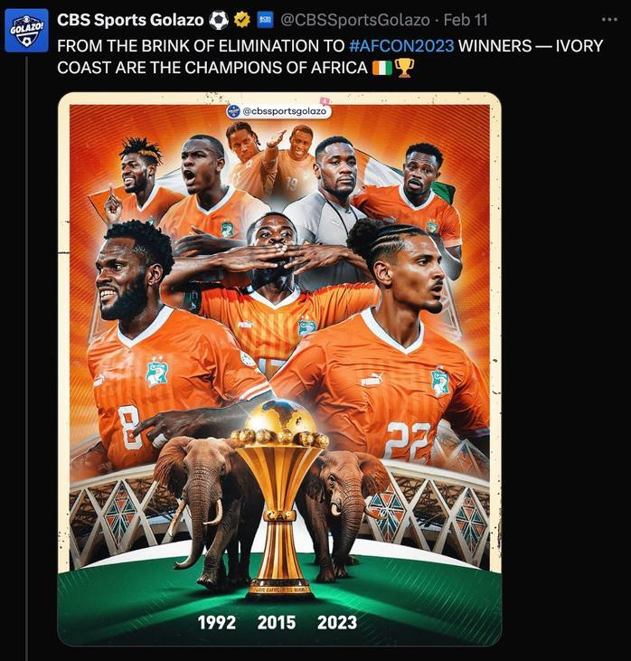
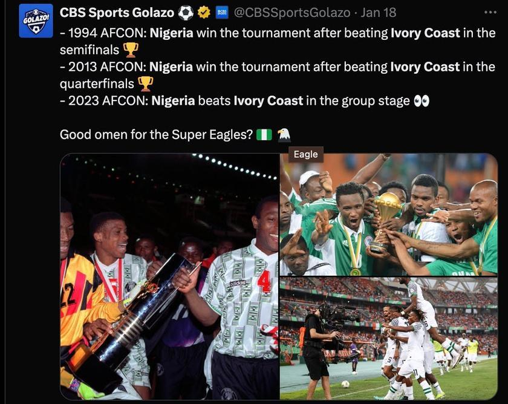
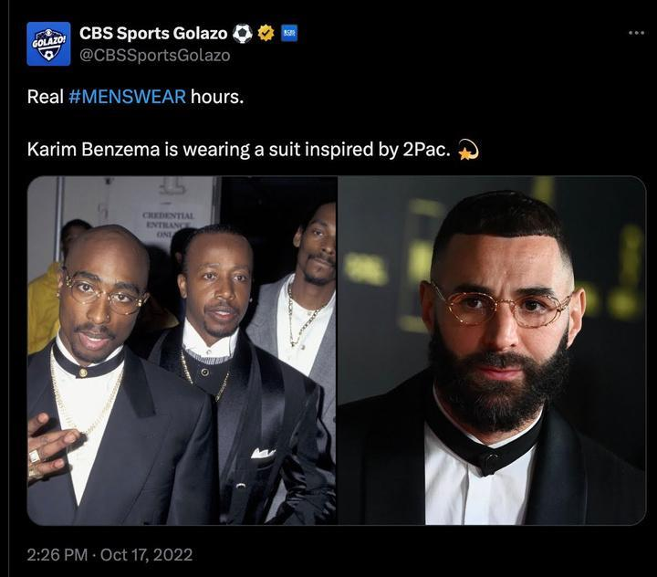
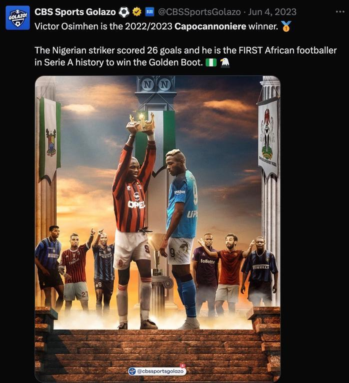

CBS
Social Media Producer, On-Air Talent, Copywriter, Strategist
Led social strategy, developed engaging on-air and social content, and crafted copy that positioned CBS Sports Golazo as a top U.S. soccer voice. Focused on culturally relevant narratives for tournaments and leagues such as Asian Cup, AFCON, CONCACAF Nations League, Champions League, NWSL and Serie A.


 






